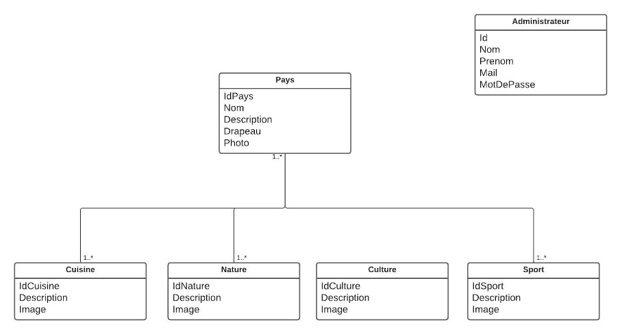
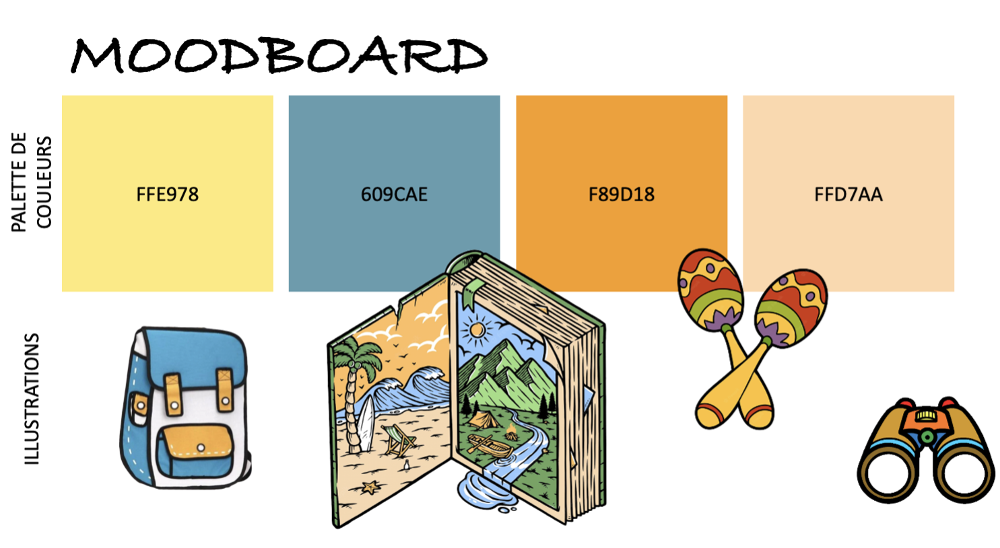

Latino'trip
Dans le cadre de ma première année de Master Cultures Numériques, j'ai pu réaliser un projet qui consiste à créer un site web dynamique sur le sujet de notre choix. Pour notre projet, nous avons choisi de créer un site web à destination des enfants sur le thème des pays d’amériques latines.
Ce projet s’est déroulé en 3 phases :
- La première phase s’articulait autour du choix de notre sujet, les raisons de notre choix, et l’élaboration de la maquette de notre site (en utilisant Figma).
- La deuxième phase consistait en le développement de la partie statique de notre site.
- Enfin, la dernière phase du projet consistait en l’élaboration de la partie dynamique avec l’introduction d’une API pour effectuer des requêtes sur notre base de données (en utilisant SQLiteStudio pour créer la base de données et Nocodb pour les requêtes API).
I - Le choix du sujet
1. Quelle cible ?
Les enfants sont naturellement curieux et veulent découvrir le monde qui les entoure. C'est pourquoi il est important de leur offrir des expériences éducatives ludiques qui stimulent leur curiosité et leur permettent de développer leur culture. Lorsque les enfants s'amusent en apprenant, ils sont plus susceptibles de s'impliquer et d'apprécier l'expérience, ce qui augmente leur motivation à apprendre davantage. Lorsque les enfants sont exposés à une variété de sujets éducatifs dès leur plus jeune âge, ils ont tendance à développer une curiosité naturelle pour le monde qui les entoure. L’objectif de notre site sera donc d’éveiller l'intérêt des enfants pour un continent (l’Amérique du Sud), et certaines villes en particuliers d’Amérique Latine afin de susciter leur intérêt pour des sujets divers et variés, auxquels ils ne sont pas souvent confrontés. Notre site se présentera donc de manière ludique, sous forme de “ livre à feuilleter” et des textes seront courts et simples à comprendre.
2. La base de données
Pour que notre site web puisse prendre forme, nous allons le coder en HTML et CSS pour la partie statique (apparence globale du site), puis nous allons y ajouter du JavaScript qui pourra interagir avec une API pour le rendre plus dynamique. Voici la base de données de notre site :
Notre base de données et composée de 6 tables :
- La table Pays : chaque pays contient un identifiant, un nom, une description, un drapeau et une image. La table pays est reliée aux quatres autres tables, c’est-à-dire qu’un pays va avoir une ou plusieurs cuisine, culture, nature et sport.
- La table Cuisine : chaque spécialité culinaire est composée d’un identifiant, d’une description et d’une image.
- La table Culture : chaque culture est composée d’un identifiant, d’une description et d’une image.
- La table Nature : chaque nature est composée d’un identifiant, d’une description et d’une image.
- La table Sport : chaque sport est composé d’un identifiant, d’une description et d’une image.
- Enfin, nous avons une table supplémentaire qui concerne l'administrateur (qui contient un nom, un prénom, un identifiant, une adresse mail et un mot de passe). Cette table nous a servi pour la partie connexion de notre site.
3. Les user cases
Nous avons donc définit des cas d’usages afin de mieux comprendre toutes les fonctionnalités de notre site web :
Comme expliqué précédemment l’administrateur pourra modifier la base de données à propos des pays présentés sur le site. Si cela est possible pour nous, nous aimerions que l’administrateur puisse également modifier le quizz.
Le quizz est un jeu où l’enfant peut jouer sans s’identifier. Il aura simplement à choisir les bonnes réponses pour avoir des points. Nous pensons réaliser un quizz où le joueur doit trouver les drapeaux des pays présentés.
L’utilisateur peut consulter le menu, où le concept du site lui est présenté et où il peut sélectionner l’article qu’il souhaite lire à propos du pays choisi.
4. Le moodboard
Etant donné que notre site web s'adresse principalement à des enfants, nous avons imaginé des couleurs vives et des illustrations assez enfantines. Nous souhaitons également que le site soit très intuitif afin de les guider au maximum dans leur navigation sans les perdre. Notre site devra donc respecter des critères d’UX assez strictes, notamment concernant le guidage et le contrôle des actions explicites.
5. La maquette
L’administrateur aura la possibilité de modifier, supprimer, ou ajouter un pays à la base donnée. S' il souhaite modifier un pays, l’administrateur clique sur l’edit pays et choisit quelle table il va modifier pour ce pays. Par exemple, sa cuisine, où il pourra modifier son texte et son image, ajouter un autre paragraphe sur une autre cuisine ou en supprimer.
II - Le site web
1. Le site statique
2. Le site dynamique
Création de l'API
Afin de rendre notre site dynamique, nous avons dû créer une API qui puisse interagir avec notre base de données via Javascript.
Pour cela, nous avons d’abord créé notre base de données sur SQLite Studio :
Nous avons d’abord créé nos 6 tables Pays, Cuisine, Nature, Culture, Sport et Administrateur.
Puis nous avons créé des tables relationnelles qui feraient le lien entre les pays et leurs caractéristiques grâce à des clés étrangères. Nous avons fait cela pour les tables PaysCuisine, PaysCulture, PaysNature et PaysSport.
Nous avons ensuite importé cette base de données dans nocodb et cet outil a permi de créer des listes de culture, nature, cuisine et sport pour chaque pays de la manière suivante :
A partir de là, nous avons pu mettre en place un reverse proxy et un serveur afin de faire tourner notre site et nocodb sur les mêmes ports et effectuer des requêtes API pour interagir avec notre base de données.
Les fonctionnalités du site
Grâce à cette méthode, nous pouvons afficher en temps réel les bonnes informations selon ce que l'utilisateur sélectionne (pays, nature, culture, cuisine, sport). Voici un exemple avec le Brésil.
Tout d’abord, l’utilisateur arrive sur la page d’accueil où il peut sélectionner le pays de son choix.
Une courte présentation de ce pays s’affiche alors en tant réel (grâce à l’id du pays que nous avons récupéré).
A chaque fois que l’utilisateur clique sur un bouton : cuisine, nature, sport ou culture, les informations relatives au pays en question s’affichent grâce à des requêtes utilisant la méthode GET.
Cela est possible grâce à notre requête API qui va parcourir parmi la liste cuisine du pays en question par exemple, les informations relatives à ces cuisines là pour les afficher.
Cela fonctionne également pour l’administrateur du site : tout d’abord, l’administrateur peut accéder à son compte via la page de connexion. Lorsqu’il entre les mauvais identifiants un message d’avertissement apparaît pour le prévenir de son erreur et l’accès ne lui est autorisé que si le mail et le mot de passe sont les bons (la vérification se fait grâce à une requête GET et une comparaison avec les données entrées par l’utilisateur).
Une fois authentifié, l’administrateur peut agir sur la base de données pour modifier un pays et les informations relatives à ce pays :
Une fois le pays sélectionné, les informations relatives à ce pays sont directement pré-remplies dans les champs requis. Cela permet une modification plus facile des données pour l’administrateur. L’administrateur peut donc désormais modifier les informations (comme l’image du pays, sa description, ses cultures, etc) et enregistrer ses modifications qui seront sauvegardées dans la base de données grâce à une méthode ‘PATCH’ qui met à jour la base de données avec les nouvelles modifications apportées.
III - Bilan sur le projet
Retour refléxif
Avant de commencer notre projet, nous avions pour objectif de pouvoir ajouter un mini-jeu permettant aux utilisateurs de deviner les drapeaux d’un pays. Cela aurait pu se faire grâce à des méthodes GET qui comprenaient les inputs entrés par les utilisateurs avec les vrais id des pays concernées (un peu de la même façon que nous avions procédé pour la page de connexion). Malheureusement, nous n’avons pas pu aboutir à ce projet par manque de temps.
De plus, nous pensions qu’il serait aussi intéressant de pouvoir créer ou supprimer un pays avec des méthodes POST et DELETE, mais nous avons finalement choisi de modifier uniquement les pays en raison du temps imparti et du fait que nous pensions que la modification d’un pays était plus complète en terme de code. En effet, modifier un pays suggère d’agir les tables relationnelles : à chaque fois que nous ajouterons ou enlevions une cuisine d’un pays par exemple, il ne suffit pas de simplement modifier la liste cuisine du pays mais aussi de modifier la liste de pays d’une cuisine. Par exemple, si nous ajoutons la spécialité culinaire Empanadas pour le pays Cuba, alors il faut ajouter Empanadas à la Cuisine List de la table Pays et Cuba à la Pays List de la table Cuisine. Cela nécessite donc d’agir sur la table relationnelle PaysCuisine qui liait ces deux tables grâce en ajoutant une ligne conciliant ces 2 pays grâce à une requête POST. de la même façon, si nous retirons la spécialité culinaire Empanadas du pays Cuba, alors il faut supprimer cette ligne de la table PaysCuisine grâce à une requête DELETE.
La modification des pays nécessite alors plusieurs requêtes et celle-ci nous a permis de manipuler à la fois des requêtes GET (pour pré-remplir les champs des pays sélectionnés), POST (pour créer des relations entre les caractéristiques et les pays), DELETE (pour supprimer des relations entre les caractéristiques et les pays) et PATCH (pour mettre à jour la base de données modifiée).
Gestion de projet
Pour que notre projet se passe au mieux, nous avons établi une matrice des risques afin d’identifier et d’éviter les risques qui pourraient affecter notre projet.
Cette méthode nous a été très utile et nous a permis de gagner du temps sur des risques que nous avions prévu et donc de minimiser les effets négatifs sur la qualité de notre projet. Parmis les risques : perte de données, absence d'un membre du groupe, mauvaise répartition du travail, manque de communication, etc.